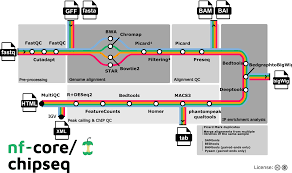

A system where data comes in and data goes out the end. We use the term pipeline to describe a bunch of bioinformatics tools grouped together in an automated way that passes data along a chain. This can be a bash script, or using a more dedicated language for the task such as Nextflow or Snakemake. Today we will learn Nextflow.
Nextflow is a system that allows you to join together bash commands in a way that is reproducible and portable. It’s a commonly used method of doing Bioinformatics used in both industry and academia. It puts a lot of focus on reproducibility as it works hand-in-hand with other systems such as Git and Singularity/ Docker so a bunch of people can work on these pipelines together with a portable set of software.
Here’s an example ChIP-seq Nextflow pipeline from nf-core, 
The answer is that Nextflow adds a ton of features that allow you to make your pipelines more complex with less code. A few of these features are:
Although there are a lot of Nextflow pipelines already out there to use, today we are going to make our own one from scratch! The ability to create your own pipelines will help you in whatever analysis you like to do. Plus if you look up jobs in bioinformatics online almost every one looks for this skill.
Let’s make a protein occupancy pipeline that allows the user to select between ChIP-seq or CUT&RUN.